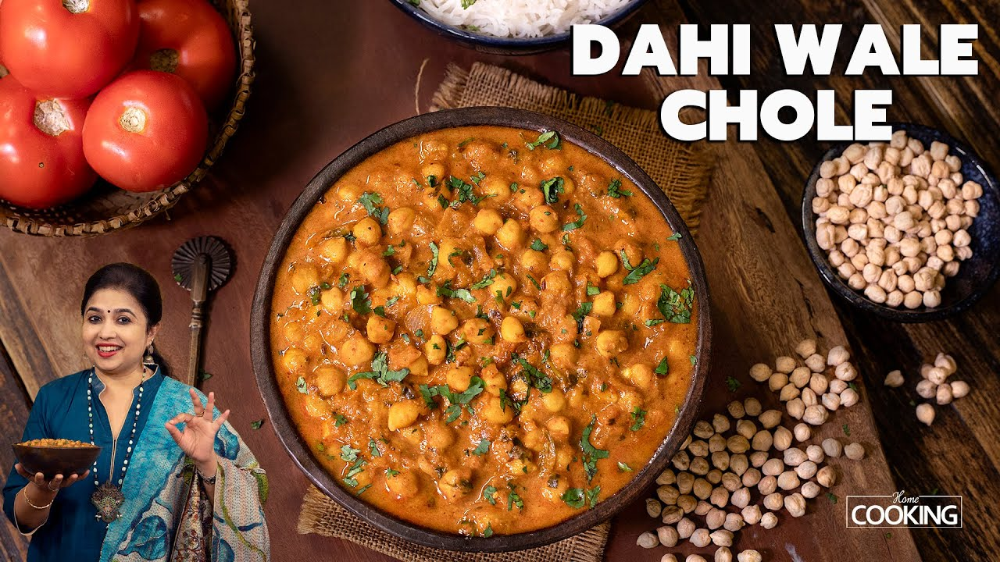

Chole


Description
Chole is a popular North Indian curry made with chickpeas simmered in a
spicy, tangy tomato-onion gravy. It’s rich, flavorful, and perfect with
bhature, puri, or steamed rice. This dish is known for its deep color and
aromatic spice blend that gives it a warm and comforting taste.
Ingredients
- 1 cup chickpeas (soaked overnight)
- 2 onions, finely chopped
- 2 tomatoes, pureed
- 1 tsp ginger-garlic paste
- 2–3 green chilies
- 2 tsp chole masala
- 1 tsp red chili powder
- ½ tsp turmeric
- 1 tsp cumin seeds
- Salt to taste
- 2 tbsp oil
- Fresh coriander for garnish
Steps
- Pressure-cook the soaked chickpeas until soft.
- Heat oil, add cumin seeds, onions, and sauté until golden.
- Add ginger-garlic paste and cook for a minute.
- Add tomato puree and spices; cook until the oil separates.
- Add boiled chickpeas and some of the cooking water.
- Simmer 10–15 minutes until thick.
- Garnish with coriander and serve hot.
HOME